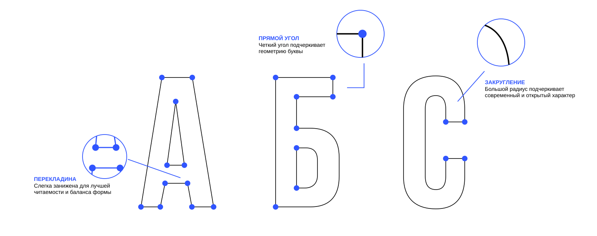

92%
Заметность
Быстро привлекает внимание
и выделяет среди других
Высокий. Прямой. Уверенный.
Bebas создан для текста, который невозможно не заметить.
Bebas — это шрифт с ярко выраженным характером.
Его высокие,
узкие и чёткие буквы создают сильный
визуальный ритм и сразу
привлекают внимание.
Он не просит внимания. Он его забирает.
От буквы к визуальному языку

Bold
BRegular
EBook
BLight
AThin
SКонцептуальная аналитика шрифта
92%
Быстро привлекает внимание
и выделяет среди других
84%
Создает сильный визуальный
ритм и подчеркивает главное
76%
Высокая плотность информации
позволяет размещать больше
текста
в ограниченном пространстве
Кириллический алфавит
0123456789
Bebas — был создан японским дизайнером Рёити Цунэкавой
в 2005
году. Изначально шрифт появился как эксперимент и
способ развить
навыки в типографике.